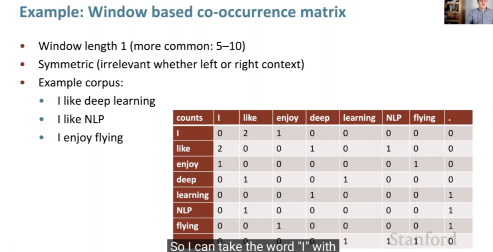
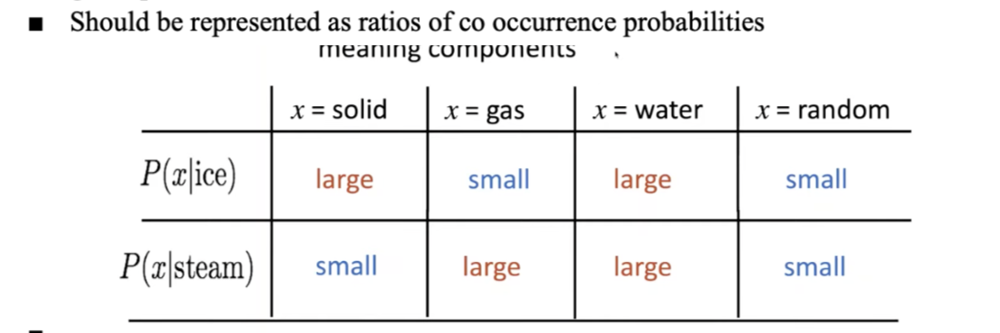
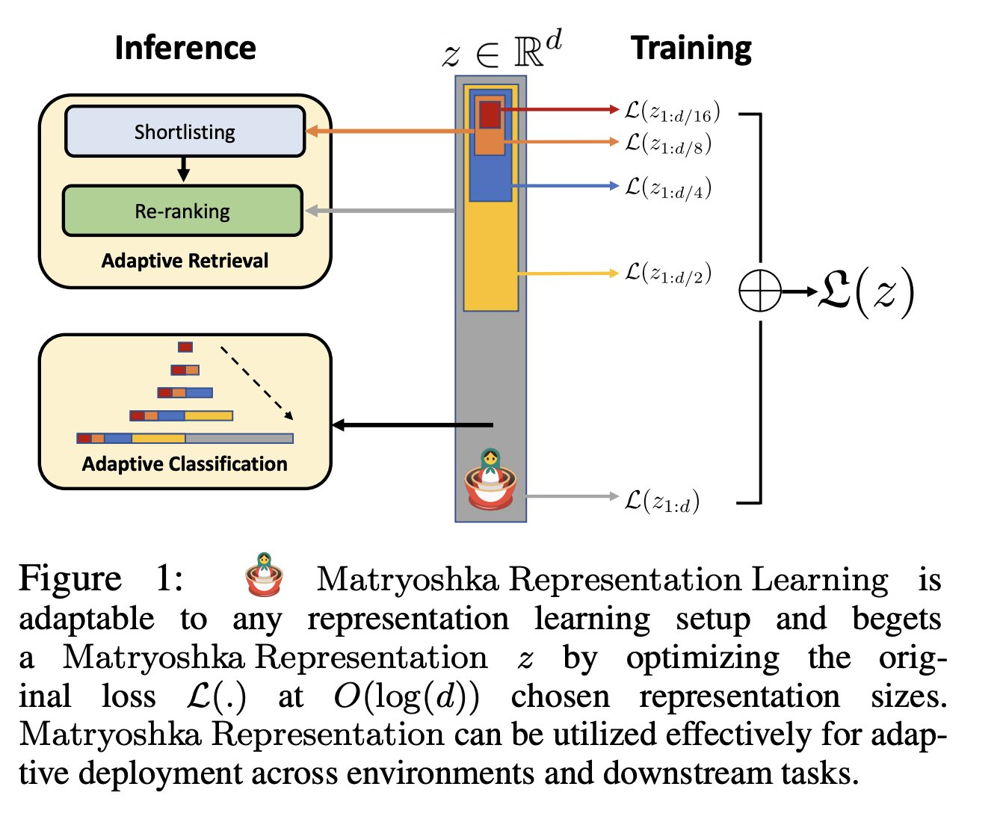

Natural Language Processing • Word Vectors/Embeddings
- Overview
- How do we represent the meaning of a word?
- Overview
- Word Embeddings
- WordNet
- Word2Vec
- Bag-of-Words based embeddings (ignores order of words)
- Contextual embeddings (considers order and context of words)
- Sentence/Document Embeddings (operates at a higher granularity)
- Positional embeddings (encode position of words in a sequence)
- Relative embeddings
- Summary
- Limitations of Word Embeddings
- Matryoshka Representation Learning
- Citation
Overview
- We can think of information existing in a continuous stream or in discrete chunks. Large Language Models (LLMs) fall under the category of continuous knowledge representation.
- LLM embeddings are dense, continuous real-valued vectors existing in a high-dimensional space. Think of them as coordinates on a map: just as longitude and latitude can pinpoint a location on a two-dimensional map, embeddings guide us to rough positions in a multi-dimensional ‘semantic space’ made up of the connections between the words on the internet. Since the embedding vectors are continuous, they allow for an infinite range of values within a given interval, making the embeddings’ coordinates ‘fuzzy’.
- An LLM embedding for ‘Jennifer Aniston’ will be a several-thousand-dimensional continuous vector that leads to a location in a several-billion-parameter ‘word-space’. If we add the ‘TV series’ embedding to this vector then I will be pulled towards the position of the ‘Friends’ vector. Magic! But this magic comes with a price: you can never quite trust the answers. Hallucination and creativity are two sides of the same coin.
- In the domain of Natural Language Processing (NLP), representing the meaning of words is of paramount importance. This article aims to discuss the evolving techniques of capturing word semantics and their underlying mechanisms, with a specific focus on Word2Vec, a popular algorithm for learning word vectors.
- Key takeaway
- Word meaning can be represented not perfectly, but decently well by a vector of real numbers.
How do we represent the meaning of a word?

- How do we represent the meaning of a word? Well, let’s start with what is meaning. We can look up the Webster Dictionary and here’s what it says:
- The idea that is represented by a word, phrase, etc.
- The idea that a person wants to express by using word, signs, etc.
- The idea that is expressed in a work of writing, art, etc.
Overview
“You shall know a word by the company it keeps” - J.R. Firth
- Natural language processing (NLP) is a crucial part of artificial intelligence (AI), modeling how people share information.
- In recent years, deep learning approaches have obtained very high performance on many NLP tasks.
- Natural language processing (NLP) is the ability of a computer program to understand human language as it is spoken and written – referred to as natural language. It is a component of artificial intelligence (AI).
- NLP has existed for more than 50 years and has roots in the field of linguistics.
Word Embeddings
- Word embeddings, or word vectors, offer a dense, continuous, and low-dimensional representation of words, preserving their semantic and syntactic properties. In essence, these are real-valued vectors whose spatial proximity in the vector space captures the relationships between words.
- The concept of word embeddings relies on the Distributional Hypothesis: words that occur in similar contexts tend to have similar meanings. For instance, in the high-dimensional vector space, the vector ‘apple’ will be closer to ‘orange’ (both being fruits) than to ‘dog’.
- Word vectors or Word Embeddings build a dense vector for each word, chosen so that it is similar to vectors of words that appear in similar contexts.

- So why is it called word embeddings?

- Let’s take an example: the meaning of the word ‘banking’ is spread over all 300 dimensions of the vector. When placed together, the words are all in a high dimensional vector space and are embedded into that space as we can see in the image above.
- The word, however, needs to be represented by a vector. To transform a word into a vector, we turn to the class of methods called “word embedding” algorithms. These turn words into vector spaces that capture a lot of the meaning/semantic information of the words (e.g. king - man + woman = queen).
- Words with similar meanings tend to occur in similar context, and thus they capture similarity between words.
- Typically, word embeddings are pre-trained by optimizing an auxiliary objective in a large unlabeled corpus, such as predicting a word based on its context (Mikolov et al., 2013b, a), where the learned word vectors can capture general syntactic and semantic information.
- Thus, these embeddings have proven to be efficient in capturing context similarity, analogies and due to its smaller dimensionality, are fast and efficient in computing core NLP tasks.
- Measuring similarity between vectors is possible, using measures such as cosine similarity.
- Word embeddings are often used as the first data processing layer in a deep learning model, and we will build on this more as we get to talking about BERT.
- These embeddings have proven to be efficient in capturing context similarity, analogies and due to its smaller dimensionality, are fast and efficient in computing core NLP tasks.
WordNet
- One of the earliest ways a word’s meaning was tried to be stored was in WordNet.
- WordNet: it was a thesaurus containing lists of synonym sets and hypernyms (is a relationship), however it:
- failed to work
- was missing nuance
- was missing new meanings of words
- and was impossible to keep up to date
- it used distributional semantics, aka a words meaning is given by the words that frequently appear close to it.
- Word embeddings is what came after it and what still powers most of the NLP tasks we see today!
Word2Vec
Word2Vec algorithm showed that we can use a vector (a list of numbers) to properly represent words in a way that captures semantic or meaning-related relationships (e.g. the ability to tell if words are similar, or opposites, or that a pair of words like “Stockholm” and “Sweden” have the same relationship between them as “Cairo” and “Egypt” have between them) as well as syntactic, or grammar-based, relationships (e.g. the relationship between “had” and “has” is the same as that between “was” and “is”).
- Building on this idea, Word2Vec, introduced by Mikolov et al., provides a method to compute word embeddings. At its core, Word2Vec uses a shallow neural network trained on a large corpus of text to predict the context of a given word. The trained model’s weights are then used as the vectors representing the words.
- To illustrate, consider a text corpus. In Word2Vec, each word in a fixed vocabulary is represented by a vector, and the objective is to optimize these vectors to predict surrounding words accurately. This optimization is performed using stochastic gradient descent to minimize the loss function, which represents the discrepancy between predicted and actual context words.
- Word2Vec uses a sliding window approach. For each window, it aims to maximize the probability of the context words given the center word, i.e., maximize:
-
The context words are represented by the softmax of the dot product of the context word vector and the center word vector. During training, the word vectors are updated to maximize this probability.
-
Word2Vec can be implemented using two architectures:
-
Continuous Bag-of-Words (CBOW): Here, the model predicts the center word based on the context words. The input is the sum of the word vectors of the context words, and the output is the current word.

-
Skip-gram: This is the inverse of the CBOW model, predicting context words given a center word. The input is the current word, and the output is a softmax classification over all vocabulary to predict the context words.
- Word2Vec’s beauty lies in its ability to capture both semantic and syntactic relationships. For instance, it can represent analogies, where the vector difference between ‘king’ and ‘man’ is similar to that between ‘queen’ and ‘woman’. In the vector space, this translates to the equation:
'king' - 'man' + 'woman' = 'queen'
-

- But how does it work?
- Let’s say you have a corpus of text.
- Every word in a fixed vocabulary is represented by a vector.
- What we need to do is learn what a good vector is for each word.
- How do we learn good word vectors?
- Stochastic Gradient Descent (take a small batch and work out the gradient based off them) needed to minimize our cost function.
- How do we learn good word vectors?
- We take a center word \(c\), and words around it \(o\).
- Objective: for each position, we want to predict context words in a window and give high probability to words that occur within a context.
- Data likelihood is what we need to figure out. and we want to optimize the loss function.
- These words within a window will have somewhat similar vectors.
- These are simple count co-occurrence vectors and the meaning components in these vectors are represented as a ratio of its co-occurrence probability. 
- This embeds meaning within co-occurrence.
- We will also have a softmax function at the end that maps arbitrary values \(x\) to a probability distribution \(p\). Probability is calculated by the dot product from center and context word vectors. We use the softmax score to convert into probabilities.
- So how do we make our word vectors?
- We want to try to get reduce the loss, which would mean we would maximize probability of actually getting word.
- Model parameters = word vectors
- For each word, we will have 2 vectors that are \(d\) dimensional for both center and surrounding words.
- These two vectors will change as you move through the sentence, you’ll keep a window.
- We place words that are similar in meaning, close together in a high dimensional vector space
- For example, bread and croissant are kind of similar:
- Other similar words to croissant: brioche, focaccia
- Another example, woman, king, man:
- Start at king, subtract male, add woman = Queen:
King - man + woman = Queen
- This shows that analogies are possible.
- Start at king, subtract male, add woman = Queen:
- For example, bread and croissant are kind of similar:
- Note: the difference between traditional word count based models and deep learning based models is that deep learning based NLP models invariably represent their words, phrases and even sentences using these embeddings.
- Chris McCormick’s Word2Vec Tutorial - The Skip-Gram Model, Word2Vec Tutorial Part 2 - Negative Sampling, and Applying word2vec to Recommenders and Advertising as well as Jay Alammar’s The Illustrated Word2vec; Video are great resources on learning the basic blocks of Word2Vec.
Bag-of-Words based embeddings (ignores order of words)
- One-Hot Encoding: Each word is represented as a binary vector with a length equal to the size of the vocabulary.
- Count Vectors/Bag of Words: Each document is represented as a vector indicating the count of how often each word appears in the document.
- TF-IDF (Term Frequency-Inverse Document Frequency): A refinement over count vectors, where weights are assigned to each word that represents its importance in the document relative to all other documents in the corpus.
- Word2Vec: A predictive model that represents words as high-dimensional vectors. It comes in two forms: Skip-gram (predicting context words given a target word) and Continuous Bag of Words (CBOW) (predicting a target word given context words).
- GloVe (Global Vectors for Word Representation): Vectors are learned by counting how often each pair of words appears together in the corpus and then performing matrix factorization on the count matrix.
- FastText: An extension of the Word2Vec model that learns vectors for n-grams of characters, and represents words as the sum of these n-grams.
Contextual embeddings (considers order and context of words)
- ELMo (Embeddings from Language Models): ELMo produces contextual word embeddings by learning from the internal states of a two-layer bidirectional LSTM trained as a language model.
- BERT (Bidirectional Encoder Representations from Transformers) Embeddings: BERT produces contextual word embeddings, where the vector representation for a word depends on the entire context in which it is used.
Sentence/Document Embeddings (operates at a higher granularity)
- Doc2Vec: An extension of Word2Vec that generates a dense vector representation for a whole document or a paragraph.
- Sentence-BERT: An adaptation of the BERT model to produce embeddings for full sentences.
- Universal Sentence Encoder: A model trained to encode sentences into high dimensional vectors that can be used for various downstream tasks.
Positional embeddings (encode position of words in a sequence)
- Absolute Positional Embeddings: Used in Transformer models, these embeddings encode the absolute position of each word in a sentence, thus preserving order information.
- Relative Positional Embeddings: These embeddings encode relative positions between pairs of words, i.e., the distance between two words, instead of their absolute positions. This is used in the Transformer-XL model and later in T5.
- Rotary Positional Embeddings/RoPE (Rotary Positional Encoding): A type of relative positional encoding that employs rotation operations to encode relative positions, used in models like the Routing Transformer and RoFormer.
- Rotary Positional Encoding is an innovative method to inject positional information. Instead of adding or concatenating positional data:
- Rotation Mechanism: RoPE rotates the word embeddings based on their positions.
- Uniform Distribution: The rotation ensures that the positional information gets uniformly spread across all dimensions.
- Dynamic Scaling: Advanced variants of RoPE adjust the rotation scaling based on sequence length, enhancing versatility.
RoPE Embedding (Rotary Positional Embedding)
- Let’s delve a bit deeper into RoPE. Models such as Llama 2 and PaLM utilize RoPE to introduce the positional information of tokens when modeling sequences. Currently, RoPE either outperforms or is on par with other position encoding techniques used to represent the order of tokens in a sequence.
- Models such as Llama 2 and PaLM utilize RoPE to introduce the positional information of tokens when modeling sequences. Currently, RoPE either outperforms or is on par with other position encoding techniques used to represent the order of tokens in a sequence.
- Understanding RoPE: As seen above, there are two types of Positional Embeddings (PEs): Absolute and Relative, along with their advantages and drawbacks. RoPE combines the strengths of both these embeddings.
- The objective is to have a PE technique that is easy to implement (like Absolute PEs) while ensuring that the attention score depends only on the relative distance between tokens (like Relative PEs). RoPE accomplishes this by applying PEs to tokens in an “absolute” manner, but the methodology used results in the attention score between tokens becoming “relative”.
- Details:
- Absolute Application: RoPE works on each token based on its “absolute position index”, producing the “positioned” versions of the query (q) and key (k) vectors for each token.
-
Key Insight: The “positioned” versions of q and k are achieved by rotating them, using rotation as a method to introduce positional information.
To understand how rotation introduces positional information: Vectors are rotated using rotation matrices defined by:
|cos ϴ -sin ϴ| |sin ϴ cos ϴ|The angle of rotation, ϴ, is a function of the token’s “index m”, which means it’s determined by the position of the token in the sequence.
- Relative Outcome: The choice to use “positioned versions” of q and k through rotation ensures that attention scores between these positioned vectors become relative. An important detail is that ϴ is not consistent throughout the rotation matrix. Specifically, ϴ is chosen based on the same approach used in sinusoidal embeddings. This choice further ensures the attention score is relative, as the dot products of sinusoidal PEs decrease with increasing distance between tokens.
- Additional Points:
- RoPE is specifically applied to query (q) and key (k) vectors, and not the value vectors, as only q and k participate in determining attention scores via dot products.
- Unlike sinusoidal PEs which are added to token embeddings just once at the initial layer, RoPE rotations of q and k are implemented at every layer.
- RoPE stands out as the sole PE technique compatible with efficient attention mechanisms, such as Linear attention.
Relative embeddings
- Relative positional embeddings encode the relative position or distance between pairs of words in a sequence. Introduced in the paper Self-Attention with Relative Position Representations and later used in Transformer-XL and T5, they’ve been quite influential in the NLP field.
- Let’s look at an example to clarify the concept. Consider the sentence “Alice threw the ball to Bob.”
- The relative positions of the word “ball” with respect to other words would be:
- “Alice”: +3
- “threw”: +2
- “the”: +1
- “ball”: 0
- “to”: -1
- “Bob”: -2
- Now of course, the above example is a high level example and not how the Transformer model works. Let’s look at how that works below:
- Each position in the input sequence has a corresponding vector in the embedding matrix, just like word embeddings.
- The difference between positions \(i\) and \(j\) (i.e., \(i - j\)) is calculated for every pair of positions in the input sequence.
- This difference is used as an index to look up the relative position embedding vector in the embedding matrix. So if the difference is \(d\), the \(d^{th}\) row of the embedding matrix is used.
- This relative position embedding vector is then added to the attention scores, along with the normal (non-relative) attention scores.
- The key advantage of relative positional embeddings over traditional absolute positional embeddings is that they allow the model to generalize better to sequence lengths that weren’t seen during training. This is particularly useful for tasks that involve very long sequences of text.
Summary
- In this article, we categorized different types of word embeddings used within NLP and their use cases.
-
Bag-of-Words (BoW): It is the simplest way to represent text data. It is a count-based method that simply counts the number of times each word appears in a document. However, BoW does not take into account the order or context of words. It is called a “bag” of words because any information about the order or structure of words in the document is discarded. The model is only concerned with whether known words occur in the document, not where in the document.
-
TF-IDF (term frequency-inverse document frequency): It is also a count-based method that takes into account the frequency of a word in a document along with the frequency of the word in the entire corpus of documents. So, words like “the” which are very common will have a low TF-IDF score but the words which are unique/rare/less common will be have a higher score.
-
Word2Vec: It is a neural network-based model that learns to represent words as vectors. The model is trained on a large corpus of text, and it learns to represent words as vectors in a high-dimensional space. For words which are semantically similar, vectors will be close in the vector space and for the semantically dissimilar works, vectors will be far apart. In other words, Word2Vec converts words to vectors, thereby capturing their meaning, semantic similarity, and relationship with surrounding text. It is for this reason that word embedding analogies (such as the famous
king – man + woman = queen) can be arithmetically obtained. -
Recurrent Neural Networks (RNNs): It is a type of neural network where the output from the previous step is fed as input to the current step. It is well-suited for representing sequential data, such as text. Later evolved with LSTMs (capturing long-range dependencies) and other architectures.
-
Transformer: It is a encoder-decoder model leveraging the self- and cross-attention mechanisms that allows it to learn long-range dependencies between different parts of an input sequence. Attention allows a model to focus on specific parts of its input data. Learning these dependencies helps improve the model’s ability to understand the meaning of the sentence.
-
Limitations of Word Embeddings
- Despite its effectiveness, Word2Vec has limitations. It fails to capture the meaning of phrases or words with multiple meanings (polysemy). Moreover, it requires significant computational resources and time, especially for large vocabularies. Also, unknown or out-of-vocabulary words present a problem.
- To address these issues, newer models like FastText (which uses subword information), and contextual embeddings like ELMo, BERT, and GPT-3 have been introduced. These models are not only capable of capturing more nuanced meanings but can also handle out-of-vocabulary words by learning from subword units. Additionally, these models leverage the idea of “universal language models”, which are pre-trained on a large corpus of text and can be fine-tuned for various NLP tasks.
- This progression towards more robust and context-aware word representations underlines the exciting advancements in NLP, making it a rapidly evolving and promising field.
- One limitation of individual word embeddings is their inability to represent phrases (Mikolov et al., 2013), where the combination of two or more words (e.g., idioms like “hot potato” or named entities such as “Boston Globe”) does not represent the combination of meanings of individual words.
- One solution to this problem, as explored by Mikolov et al. (2013), is to identify such phrases based on word co-occurrence and train embeddings for them separately.
- More recent methods have explored directly learning n-gram embeddings from unlabeled data (Johnson and Zhang, 2015).
- Training embeddings from scratch requires a large amount of time and resources. Mikolov et al. (2013) tried to address this issue by proposing negative sampling which is nothing but frequency-based sampling of negative terms while training the word2vec model.
- A common phenomenon for languages with large vocabularies is the unknown word issue or out-of-vocabulary word (OOV) issue.
- Character embeddings naturally deal with it since each word is considered as no more than a composition of individual letters.
- In languages where text is not composed of separated words but individual characters and the semantic meaning of words map to its compositional characters (such as Chinese), building systems at the character level is a natural choice to avoid word segmentation (Chen et al., 2015). Thus, works employing deep learning applications on such languages tend to prefer character embeddings over word vectors (Zheng et al., 2013).
- Traditional word embedding methods such as Word2Vec and Glove consider all the sentences where a word is present in order to create a global vector representation of that word.
- However, a word can have completely different senses or meanings in the contexts.
- For example, lets consider these two sentences:
- “The bank will not be accepting cash on Saturdays”
- “The river overflowed the bank.”
- The word senses of bank are different in these two sentences depending on its context. Reasonably, one might want two different vector representations of the word bank based on its two different word senses.
- The new class of models adopt this reasoning by diverging from the concept of global word representations and proposing contextual word embeddings instead.
- For example, lets consider these two sentences:
Matryoshka Representation Learning
- Matryoshka Representation Learning (MRL) is a new approach in ML that focuses on creating flexible and adaptable representations for various downstream tasks, particularly in the context of large-scale classification and retrieval systems. This method addresses the limitations of traditional fixed-capacity representations, which may not be optimal for all tasks due to varying computational and statistical requirements.
- This technique, adopted in OpenAI’s latest embedding update, text-embedding-3-large, is characterized by its ability to encode information at multiple granularities within a single high-dimensional vector. Drawing an analogy from the Russian Matryoshka dolls, MRL encapsulates details at various levels within a single embedding structure, allowing for adaptability to the computational and statistical needs of different tasks.
- The essence of MRL lies in its ability to create coarse-to-fine representations, where earlier dimensions in the embedding vector store more crucial information, and subsequent dimensions add finer details. You can understand how this works by the analogy of trying to classify an image at multiple resolutions – the lower resolutions give high-level info and the higher resolutions add finer details – human perception of the natural world also has a naturally coarse-to-fine granularity, as shown in the animation below.
-
These representations, or embeddings, are designed to be adaptive and flexible, suitable for various downstream tasks, particularly in large-scale classification and retrieval systems.
- The figure below from the paper shows that MRL is adaptable to any representation learning setup and begets a Matryoshka Representation \(z\) by optimizing the original loss \(L(.)\) at \(O(log(d))\) chosen representation sizes. Matryoshka Representation can be utilized effectively for adaptive deployment across environments and downstream tasks.

- MRL’s adaptability extends to a wide range of modalities, including vision, vision+language, and language models (such as ViT, ResNet, ALIGN, and BERT). The method has shown remarkable results in various applications, such as adaptive classification and retrieval, robustness evaluations, few-shot and long-tail learning, and analyses of model disagreement. In practical terms, MRL facilitates up to 14x smaller embedding sizes for tasks like ImageNet-1K classification without compromising accuracy, up to 14x real-world speed-ups for large-scale retrieval, and up to 2% accuracy improvements in long-tail few-shot classification.
- One of the striking outcomes of using MRL is demonstrated in OpenAI’s text-embedding-3-large model, which, when trimmed to 256 dimensions, outperforms the full-sized text-embedding-ada-002 with 1536 dimensions on the MTEB benchmark. This indicates a significant reduction in size (to about 1/6th) while maintaining or even enhancing performance.
-
Importantly, MRL integrates seamlessly with existing representation learning pipelines, requiring minimal modifications and imposing no additional costs during inference and deployment. Its flexibility and efficiency make it a promising technique for handling web-scale datasets and tasks. OpenAI has made the pretrained models and code for MRL publicly available, underlining the method’s potential as a game-changer in the field of representation learning.
- Key Features of Matryoshka Representation Learning:
-
Adaptive Representations: MRL encodes information at different granularities, allowing a single embedding to adapt to varying computational constraints of downstream tasks. This is achieved by learning coarse-to-fine representations within a high-dimensional vector.
-
Minimal Overhead: The implementation of MRL requires only minimal modifications to existing representation learning pipelines. Importantly, it imposes no additional cost during inference and deployment.
-
Efficiency and Accuracy: MRL has been shown to significantly reduce the size of embeddings needed (up to 14× smaller) for tasks like ImageNet-1K classification without losing accuracy. It also offers real-world speed-ups (up to 14×) for large-scale retrieval tasks and improves accuracy in long-tail few-shot classification scenarios.
-
Robust and Versatile: The approach is robust and extends seamlessly across various modalities, including vision (e.g., ViT, ResNet), vision + language (e.g., ALIGN), and language models (e.g., BERT).
-
Open-source Availability: The code and pretrained models for MRL are openly available, facilitating broader use and further development by the research community.
-
Implementation and Applications:
- Nested Optimization: MRL optimizes representations at logarithmic intervals within a high-dimensional vector, resembling the structure of Matryoshka dolls, hence the name.
- Adaptive Deployment: The flexible nature of the Matryoshka Representations allows for adaptive deployment based on accuracy and compute constraints. This is particularly useful in environments with varying resource availability.
-
Large-scale Classification and Retrieval: MRL demonstrates significant benefits in large-scale classification and retrieval, offering a balance between compute efficiency and accuracy.
- Here is the code for MRL as well as the OpenAI blog on their latest embedding.
Citation
If you found our work useful, please cite it as:
@article{Chadha2021Distilled,
title = {Word Vectors},
author = {Jain, Vinija and Chadha, Aman},
journal = {Distilled Notes for Stanford CS224n: Natural Language Processing with Deep Learning},
year = {2021},
note = {\url{https://aman.ai}}
}